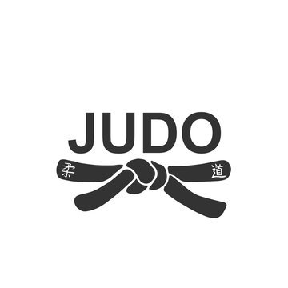

JUDO
historia
El judo recibe este nombre pues proviene del término japonés que significa «camino de la flexibilidad, de la suavidad o camino apacible». El Judo fue creado por el doctor Jigoro Kano a fines del siglo XIX, sobre la base de los métodos de autodefensa orientales de los samuráis, que combinó el estilo y las técnicas del jujitsu para crear la nueva disciplina.. Kano, cuando tenía veinte años, fundó el primer kodokan (escuela de judo) en 1882, en Shitaya. Se convirtió en un maestro distinguido y estableció la filosofía oriental del judo que sostiene que debe hacerse un entrenamiento mental y físico para conseguir que la mente y el cuerpo estén en un estado de armonía y equilibrio, concepto fundamental en la mayoría de las artes marciales. Introdujo el principio de tskuri-komi. En 1890, el judo estaba ya arraigado en Japón y se hizo rápidamente popular. Las autoridades Educativas de Japón lo adoptaron como deporte oficial y la policía lo incluyó en sus programas de entrenamiento. En 1905, la policía de París lo incorporó en sus programas de entrenamiento.
CATEGORIAS
Las categorías en judo se dividen en grados Kyu (alumno) y Dan (maestro). El grado más alto posible es el décimo segundo Dan, conseguido solamente por Jigoro Kano, su creador y el único Shihan (doctor). El más alto grado alcanzado posteriormente es el cinturón rojo, conseguido por sólo trece hombres de 10º Dan. Los colores del cinturón para los grados del Dan son: 1º al 5º Dan, negro; 6º al 8º Dan, rojo y blanco; 9º al 11º Dan, rojo; y 12º Dan, blanco. Las categorías masculinas están divididas en 10 niveles, por el peso del judoka, en tramos de peso desde más de 95 kg a menos de 60 kg. Las femeninas presentan 7 niveles, desde más de 72 kg a menos de 48 kg de peso. En las pruebas olímpicas y campeonatos del mundo ha existido siempre una gran superioridad japonesa en las categorías masculinas, en cambio entre las mujeres, han sobresalidos las británicas, las latinoamericanas y españolas
